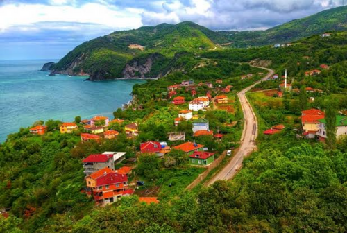
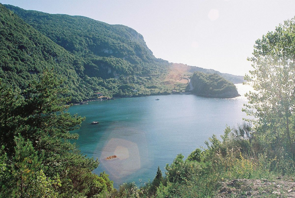
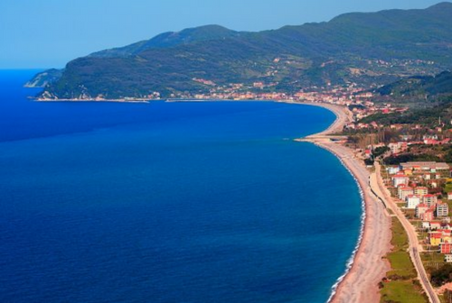
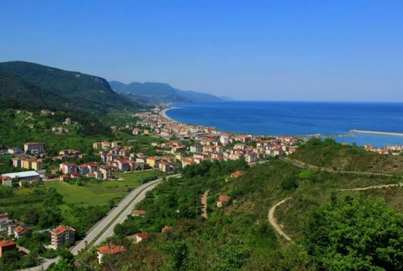

Cide Hakkında
Tarihi
Anadolu’nun çoğu yöresinde olduğu gibi Cide’nin tarihi de insanlık tarihi kadar eskidir. Homeros yaklaşık 2800 yıl önce yazdığı İlyada’da Cide’den şöyle söz eder. “Yüksek kültürlü Henetlerin yurdundan geçtik; Kiteros’tanAycelos’tan”.
Aycelos bugünkü Cide’dir. Kiteros’ta doğal bir liman olan ve günümüzde Gideros adıyla bilinen eski bir yerleşim merkezidir. Cide 1213 yılında Anadolu Selçukluların, 1460‘da Fatih Sultan Mehmet ‘in Kastamonu’yu almasıyla da Osmanlı İmparatorluğunun egemenliğine geçmiştir.
Cide, tarih boyunca ipek yolu üzerinde önemli bir liman olma özelliğini sürdürmüş, Osmanlı İmparatorluğu döneminde de “Karaağaç İskelesi “ adıyla Rus çarlığından getirilen tuzun dağıtım merkezi ve imparatorluğa mal sevk edilen bir liman olarak önem kazanmıştır. 1868 yılında ilçe olmuştur.
Coğrafi Yapısı
Bartın-Sinop Karayolu üzerinde yer alan ve 103 km. uzunluğunda bir kıyı şeridi ile Karadeniz’e açılan Cide, Kuzeyde Karadeniz, doğuda Doğanyurt, Güneyde Şenpazar ve Pınarbaşı, Batıda Bartın ilinin Ulus ve Kurucaşile ilçeleri ile çevrilidir.
683 km2. Yüzölçümüne sahip olan İlçemiz genelde dağlık ve engebeli bir coğrafi yapıya sahiptir. İlçenin doğusunda İsfendiyar sıradağları uzanır. Yer yer sarp ve geçit vermeyen tepelere rastlamak mümkündür. Geçit vermeyen nehir ve çay yoktur. İlçe merkezinde râkım sıfır olup ortalama râkım ise 800-900 m arasıdır. İlçenin %70’i ormanlarla kaplıdır. Başlıca ağaç türleri: kayın, köknar, gürgen, meşe, çam ve kestanedir.
İlçedeki başlıca akarsuları: Kapısuyu, Devrekani, Aydos, Güble ve Fakaz çaylarıdır.
İklim ve Bitki Örtüsü
İlçe, Karadeniz Sahil Şeridi boyunca, bölgenin en uzun ve en geniş sahil şeridine ve en uzun kumsalına sahiptir.
Cide - Bartın Karayolunun Kuzeyinde kalan Döngelce Köyü Kızıldere mevkii Birinci Derece ve Gideros Koyu mevkii İkinci Derece Arkeolojik Sit Alanı olarak tescil edilmiştir.
Bölgede koruma altına alınan bitki türü yoktur. Ayı ve karacalardan oluşan hayvan popülasyonunun koruma altına alındığı, Milli Parklar ve Yaban Hayatını Koruma Genel Müdürlüğünce bildirilmiş olup denetim ve kontrolleri ilgili birimlerimizce sürdürülmektedir.
Gökçeler Köyünde 20 Metre yüksekliğinde Malyas Şelalesi, Malyas Mağarası, Kalafat Köyü Gideros Koyu, Okçular Köyü Harabeleri, Sırakaya Köyünde doğal mağara, Çayüstü Köyü düz yerleşmesi; Fakaz’da “Gallistratia” isimli ören yeri ve Yenice Köyü Gökçekale mevkiinde Roma dönemine ait eski mezarlıklar, Pınarbaşı ilçesi sınırında bulunan Ilgarini Mağarası ile dünyanın üçüncü büyük kanyonu olan “Varla- Valla Kanyonu” kültür ve doğa mirası olarak yer almaktadır.
İlçede Batı Karadeniz iklimi hüküm sürer. En fazla Yılın Ekim ayında yağış alır. Yıllık m2’ye düşen ortalama yağış miktarı 1.088,3 kg’dır. Yıllık sıcaklık ortalaması 2005 Yılı verilerine göre 14,5 0C olup en yüksek sıcaklık 27,2 0C ile Temmuz ayında yaşanmıştır. En düşük sıcaklık ise Ocak ayında yaşanmış olup ortalama 2,5 0C’dir. Ortalama rüzgâr hızı 4,9 m/sec olup hâkim yön Güney Batı Rüzgârlarıdır.
|  |  |
|  |  |